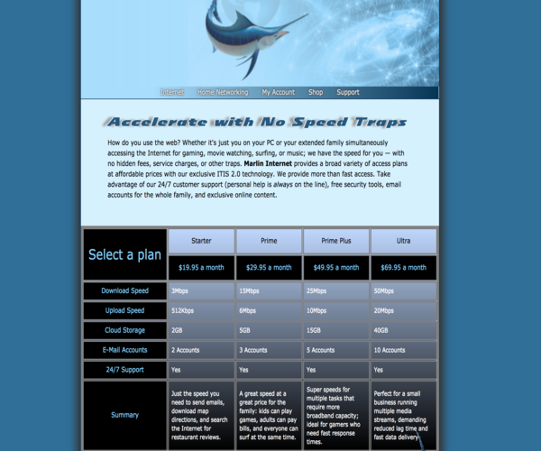
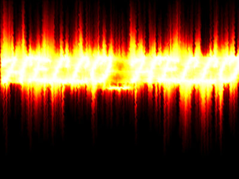

Below are examples of projects and prototypes i've built through the years. The web pages are some part of
the
independent project stacks I was given to do in West-Mec. The Words are from a few years back, they are
examples
of me fusing special effects. The characters are simple models before they were realized.

This end goal for this project was to create a table displaying the Content to both Tablets and Desktops.
Most
of the website was aleady created, so we first made the table in HTML under the article and Worked from
there.
The rows and columns were created in HTML5 and they were modified using CSS3, the hiccups that I resolved
were
involving the Select Plan cell and using the Nth of type properties to target scpecific cells.

Hello Hello are the words that are written. I was fusing different affects to make a very dramatic "fiery"
effect. This involved configurations of Filters, distortion, and wind effects. Varius rotations and
transformations were also used.